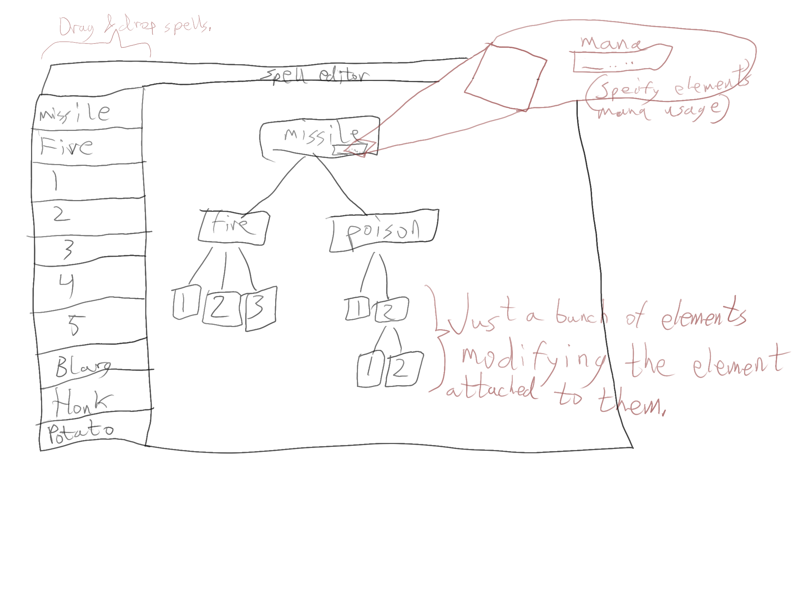

This mockup shows a possible implementation of the spell editor's GUI.
The column on the left (missile, fire, poison, etc) is a list of all the spell elements available to the player.
The player can drag and drop these elements onto any element in the grid to attach it to that element.
To cover this idea more extensively, let's run through the spell design process. First, the player drags and drop a base element onto the grid: the missile element.
The player can then drag, say, the fireball element from the column on the left and drop it onto the missile element. (All elements must be connected to the root element)
From there, the player can drop the "explosion" element onto the fire element.
Now, when this spell is cast, the game interprets it as follows:
* First, the root node indicates the spell is a projectile.
* Anything attached to the root node? Yes, this spell is a projectile that delivers fire on impact."
* Any elements attached to the fire element? Explosion. This projectile spell delivers a fiery explosion on impact.
Any element can have as many elements attached to it as the player can afford to cast. More elements = greater complexity & higher mana usage.
Higher mana usage = longer casting time and greater chance the spell will fail to cast.
More complexity = longer casting time and greater chance the spell will fail to cast.
Note that many combinations might produce no meaningful results, or totally unexpected effects. For example, light and darkness attached to a missile element. Or magic mapping attached to poison attached to ray. What will that do? No idea. That's the whole fun of magic.
Every element requires a base amount of mana to operate. However, a wizard can pump more mana into a spell to achieve greater magical power. Which will damage a monster more? Fireball with 10 mana or fireball with 20 mana? More magic = greater effects. 10 mana light vs 20 mana light?
So, in our initial example (missile -> fire -> explosion), the player could leave missile's mana at the base mana cost, since they don't need the spell to travel very far at all. If they put more mana into missile, the projectile will travel further (maybe faster -- or through multiple enemies?).
However, if the player would rather create a spell that does greater damage instead of traveling further/faster, they'd pump more mana into the fire element so that the fire produces a greater effect (in this case, more damage).
All spells have failure chances based on the spell's complexity, how much mana is invested into it, and the player's abilities. Below a certain mana threshold (which might not exist for very complex spells), there is no chance the spell will fail.
After that threshold is hit, the chance that the spell fails is proportional to mana invested in the spell.
After that threshold, there's another threshold. If this second threshold is hit, then the spell has a chance of not only failing, but of failing catastrophically.
There should probably be indicators in the spell creation GUI and/or the spell selector showing the player their chance of spell failure and of spell critical failure.
However, adding more mana to a spell has its benefits. As covered, more mana in a fireball spell can increase damage. Maybe hitting different thresholds can even unlock hidden effects (if the spell doesn't blow up in the caster's face :) ).
The light spell, for example, is intended to create a floating orb that follows the player around and lights the dungeon. A wizard could potentially take the light spell and turn it into an offensive spell by pumping a large amount of mana into it to create a blinding flash.
How elements are stacked, recurrences, etc, might have some effect on the end result. For example, a spell might end up shooting out multiple fireballs instead of just one. Or maybe it'll result in several fireballs spiraling outwards from the player. Maybe it'll result in a spell that creates an initial blinding burst but follows up with a sustained, dimmer, secondary burst.
The possibilities.